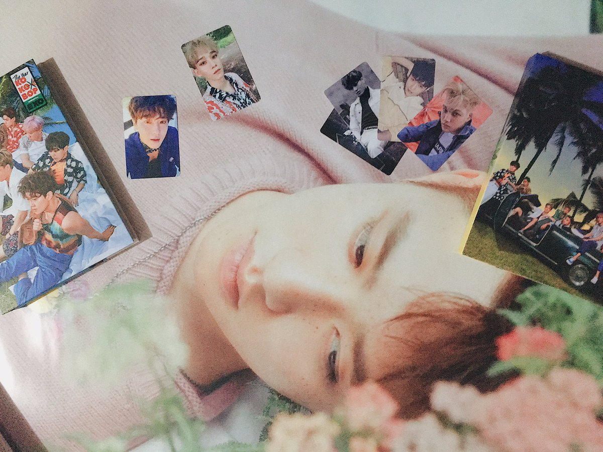
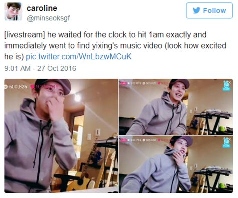
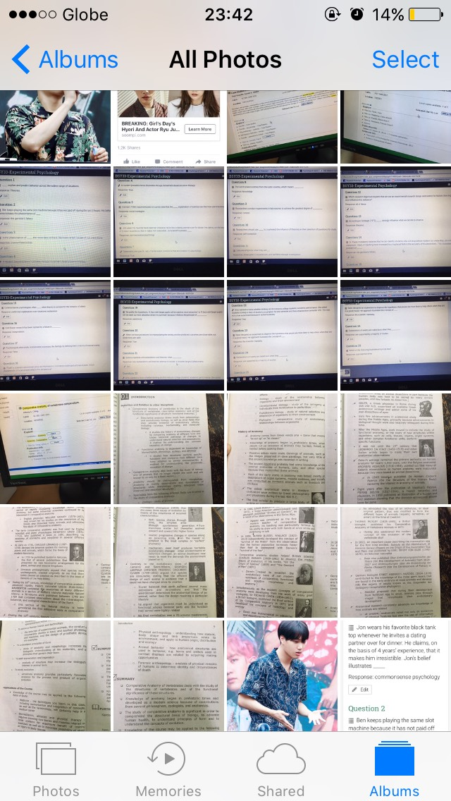
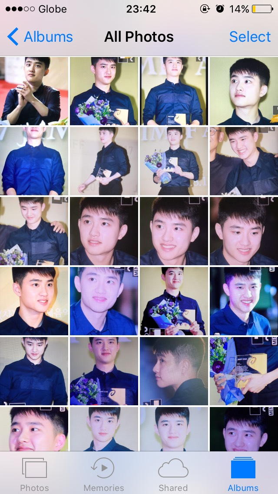
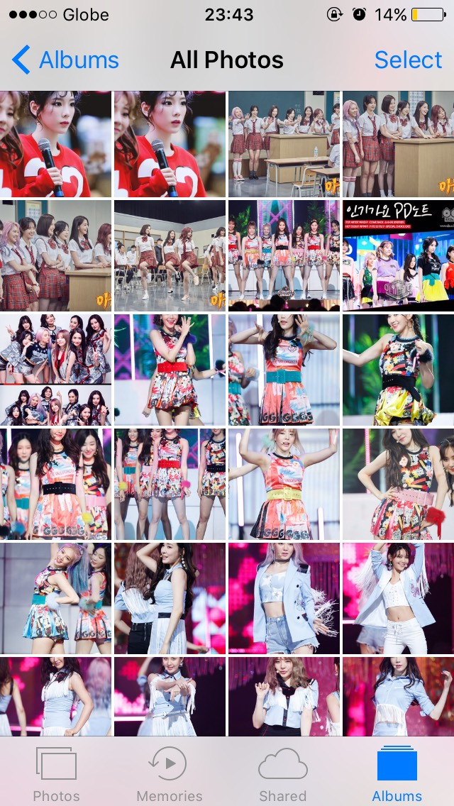
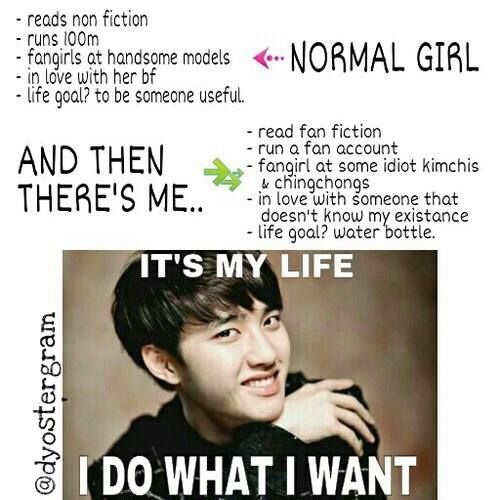
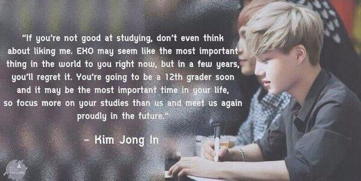

I AM a hardcore fangirl. K-pop fangirl, to be exact. I stan three groups and I make it to a point to update myself with their activities, group or individual, as much as possible. I invest my time and money for them. I buy official merchandises with my eyes closed. And I think that's true love.
However …
I am currently enrolled in a course where there is a retention policy implemented. We have to meet a quota grade in order to stay in the program and it is NO joke.
But,
I don't let fangirling affect my academic responsibilities and standings in the same way that I don't put all the time I have into academics alone.
For this section, I am giving some of the things I consider when balancing and handling my fangirl and college life:
Disclaimer: These are the things I do and I do not encourage you to do so.
- Know when to save and when to starve
When new merchandises or albums are released, I save up beforehand so that when pre-order period arrives I have something to use to pay for it. The story behind the savings gets in - at times, I don't eat lunch or anything at all in the university and just went straight home from classes just to save up.

This is the most recent album I bought from their comeback with Kokobop. (I got a Version B and Private Version)
- Livestream before anything else
When time permits me, I watch livestream of their schedules first like awards shows, drama, etc. before doing a study proper. Honestly, this brings positive effect to my study habit as it keeps me awake and active.

- Not having enough memory storage
In my phone, it is always a battle between the photos of my faves and photos of the lectures and diagrams I need for my classes. So when time comes that I need to sacrifice something, I delete some photos of my faves (but I make sure I have a file to backup those photos).




- Separate your personal and fangirl life in social media
I have two Twitter accounts - one is a personal account for my college self interactions and a fan account dedicated for my faves. These two accounts have two different feels and the fan account is the side of me that my college friends shouldn't see. Really.

Lastly,
- Know your priorities
Take for example the recently administered prelim examinations. It was two weeks for me without proper updates about my faves' activities and schedules however I controlled myself from staying and sticking with my phone and scroll through Twitter the whole night because I set my priorities straight. In times like those, academics come first. And I know that's what they want.

BACK
|